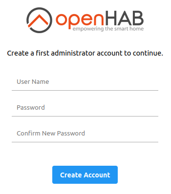

How to install Mosquitto and openHAB on Ubuntu 18.04 and 20.04 - Easy version
Updated on February 6, 2022
Introduction
With this step-by-step tutorial you will be able to quickly deploy a message broker and the openHAB automation platform on your Ubuntu 18.04 or 20.04 workstation. How to link openHAB to GrowNode will be tackled in a dedicated tutorial.
At the end of the tutorial you will have:
- installed the Mosquitto MQTT message broker
- installed a MQTT client
- tested the reception of messages from GrowNode (if you have a provisioned working board)
- installed openHAB 3.2
- set up your openHAB access
Notes:
- The same steps should also apply for Ubuntu 18.10 and 20.10, but we haven't tried yet. Let us know if you did!
- Older versions of Ubuntu do not satisfy the minimal requirements out-of-the-box, so they are not officially supported by GrowNode.
- This procedure could be also used to create an Ubuntu virtual machine to test the openHAB automation server without affecting your main system.
Disclaimer
Here we describe the basic steps to deploy a demonstrative system that can be used as a starting point. Fine tunings and ad-hoc implementations are out of scope for this document.
A proper openHAB installation should be deployed on a machine with a fixed IP within your WiFi network. We assume that you know the IP address/nameserver of your workstation. How to get/fix your IP is out of scope here.
Prerequisites
- at least 1.5 Gb free space on hard drive (only for software components, more will be needed to store data retrieved from your GrowNode)
- at least 4 Gb RAM
Step 1: Check your JAVA installation
openHAB 3.2 requires JAVA 11 to run. Newer versions are not supported. You may have already installed JAVA 11 on your system. Check it by running the command:
java --version
If the command runs and returns a JAVA version equal to 11, you are virtually ok and can move to the next step. However, if you have the standard OpenJDK JAVA on your system, note that openHAB documentation suggests to use the Azul Zulu OpenJDK JAVA 11 package instead. Indeed, OpenJDK is reported to work with some limitations with openHAB.
If you have no JAVA 11, or you want to install the recommended Azul Zulu OpenJDK Java 11, refer to the next paragraph.
Installing the Azul Zulu OpenJDK JAVA 11 package
Open the Azul Zulu Download page and download the latest Linux JAVA 11 package for your architecture in .deb format.
If you have a standard Linux workstation or virtual machine your architecture is most probably x86 64-bit
Open the downloaded file (double click on it) and select "Install" in the window that appears... and that's all! :)
Check the proper installation with java --version in a terminal.
Step 2: Installing Mosquitto MQTT message broker
Mosquitto is a message broker using the MQTT protocol. GrowNode natively supports MQTT and Mosquitto is a lightweight option to receive all the messages sent by GrowNode, and it is simply available in Ubuntu. In order to install Mosquitto use the following commands:
sudo apt-get update -y
sudo apt-get install mosquitto mosquitto-clients -y
Step 3: Test GrowNode messaging with MQTT Explorer
Enable MQTT networking on your GrowNode board, and set in main.c the IP address/nameserver of the machine where you have just installed Mosquitto. Then connect the board to your WiFi network with the provisioning procedure.
The instructions for networking and provisioning are here
To test the correct reception of MQTT messages from GrowNode, install a MQTT client on the server by opening the "Ubuntu Software" application, and searching for and installing "MQTT Explorer":

You can use any other MQTT client you like to do the test! This is just a simple option already available in Ubuntu.
Launch MQTT Explorer, and set localhost both in the "Name" and "Host" fields, as in figure. Then click on "SAVE" and then on "CONNECT".

The application will start to receive the messages sent by your GrowNode board. Just open the tree of MQTT topics, and you will find them! In the following image you can see the status message sent by the simple blink board that is created in the "Getting Started" tutorials.

Step 4: Installing openHAB using the official repository
To begin, you need to add the openHAB repository to your distribution and then install the latest stable packages (at the time of writing, openHAB 3.2 will be installed):
wget -qO - 'https://openhab.jfrog.io/artifactory/api/gpg/key/public' | sudo apt-key add -
echo 'deb https://openhab.jfrog.io/artifactory/openhab-linuxpkg stable main' | sudo tee /etc/apt/sources.list.d/openhab.list
sudo apt-get update
sudo apt-get install openhab openhab-addons
Now you can start the openHAB service and check its status (that should be running):
sudo systemctl start openhab.service
sudo systemctl status openhab.service
Finally, you can register openHAB for starting at startup, so you don't need to start it manually:
sudo systemctl daemon-reload
sudo systemctl enable openhab.service
Step 5: Configuring your first access to openHAB
- On your workstation, open the address
http://localhost:8080/and a page asking for administrator credentials will appear:

- Set your admin credentials and log in.
- Provide language and region information and click on "Begin Setup".
- You can also choose to provide your approximate location, also using the Map tool.
- Skip the add-ons installation for now.
- Click on "Get Started"... and soon the home page of your openHAB will appear!

Congratulations! You successfully installed your own MQTT server and openHAB instance. You will be able to access openHAB from your smartphone using the IP address/server name within your WiFi instead of localhost as address.
Soon a tutorial explaining how to link GrowNode to openHAB will be available. Keep in touch!